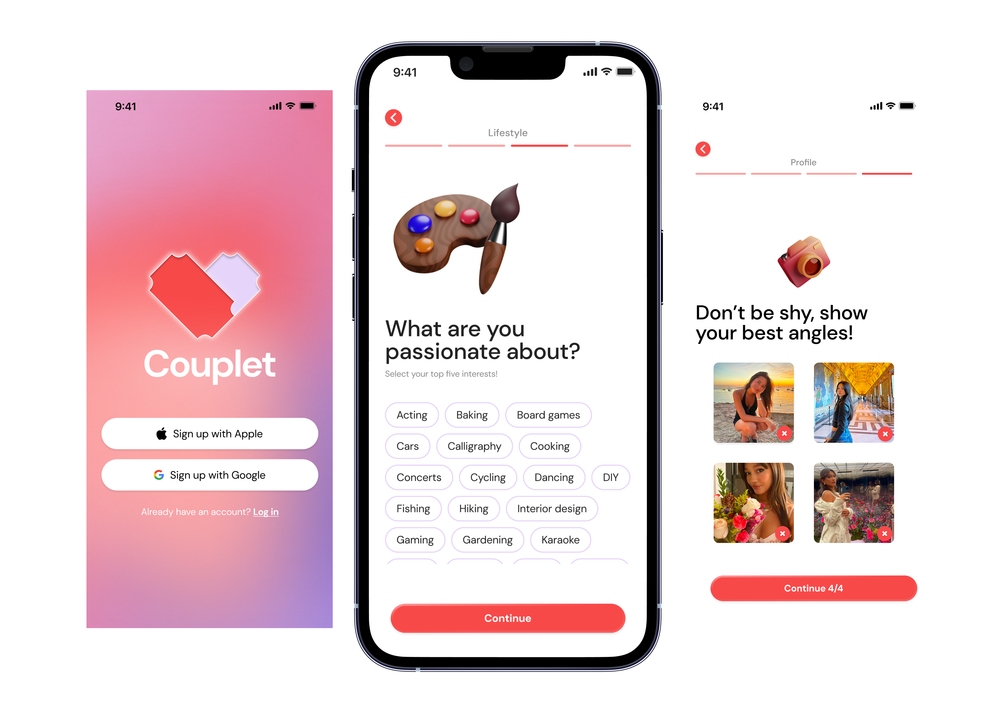
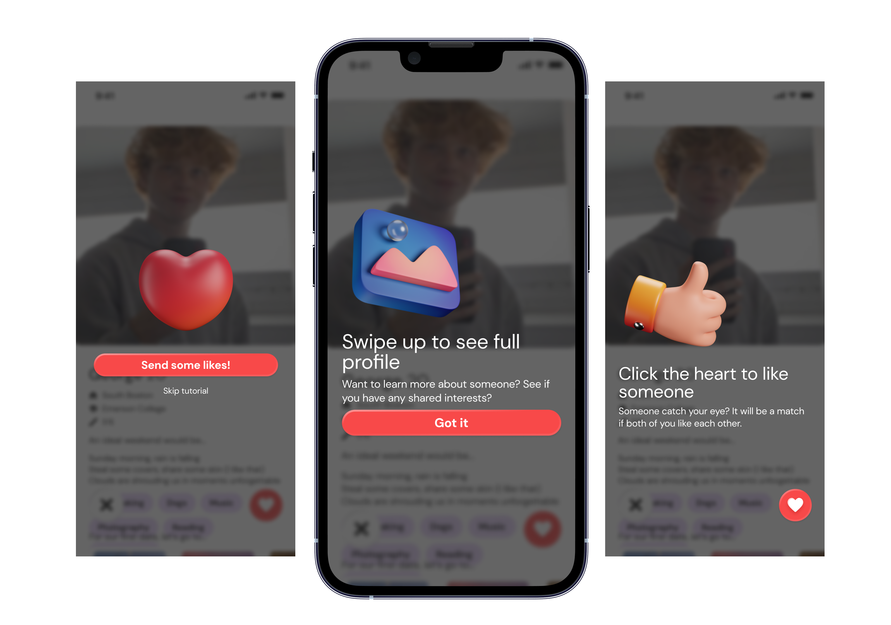
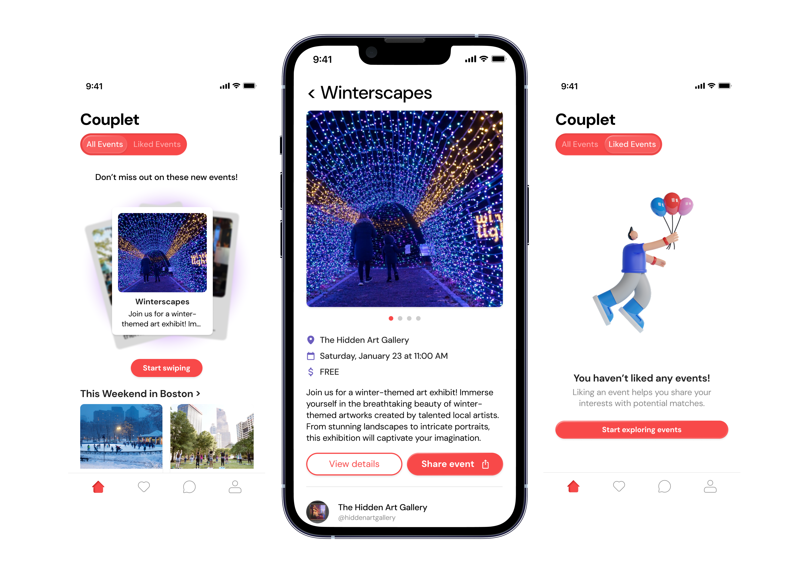
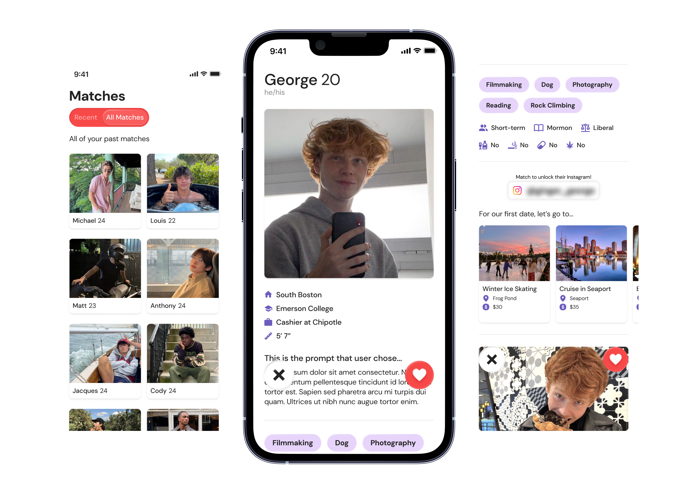
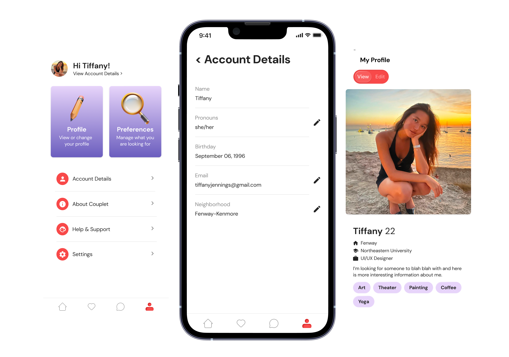

Couplet
Connecting people and cultivating community

As a UX designer at Generate, I helped design and launch Couplet, an app that reimagines how people discover and engage with local events. Working alongside our team of designers and developers, we built an app that is powered by connecting users based on their interests, with an emphasis on surfacing unique, community-driven experiences that often fly under the radar of mainstream platforms.
The app originated from Victoria and Jan, two Boston-based founders passionate about making arts and culture more accessible. Victoria's background in nonprofit research and consulting identified a pressing issue—cultural organizations were struggling to connect with younger audiences. Partnering with Jan, a software engineer and Northeastern alum, they reached out to Generate to transform their idea into a reality.
UX Design
Generate
UX/UI Designer & Brand Designer
4 months
The Problem
In this digital era, we're getting more disconnected from authentic, in-person experiences despite being more "connected' than ever. Traditional social and dating apps often create shallow, superficial connections based on appearances and quick judgments, leaving many young people dissatisfied and craving more meaningful ways to connect with others. Local events held by organizations and nonprofits provide experiences that could bring people together. Yet these events often struggle to reach younger audiences, who are often unaware that these experiences exist or find them difficult to discover through mainstream platforms. This leads to a missed opportunity: young people wanting to form real connections and organizations eager to bring people together but lacking an effective way to bridge this gap.
Couplet is an experience-curating app that reimagines how to cultivate a close community and foster meaningful connections among people through shared interests in local events and activities. Unlike traditional dating and social apps, Couplet focuses on a deeper, experience-based approach by connecting users who express similar interests in local gatherings, from arts and culture to non-profit events. By surfacing these unique experiences and making them more discoverable, Couplet helps create meaningful connections while supporting local organizations in reaching new audiences.
What We Accomplished
-
Conducted extensive competitive analysis to understand what platforms are already out there
-
Created comprehensive brand identity including color palette, logo, and typography
-
Established core user flows and designed low-fidelity wireframes
-
Developed high-fidelity prototypes based on continuous feedback from user testing and stakeholder interviews
-
Participated in weekly design critiques with the team to refine and improve the user experience
-
Collaborated in creating a detailed brand book to document our app's brand identity
-
Showcased the final product at Generate's Annual Showcase to over 300+ attendees
Research
Competitor Analysis
By looking into what's already out there and learning what features our competitors' apps provide, we were able to better understand what certain platforms already offer. We learned that most existing platforms mostly focus on the event listings but lack meaningful social connection features. While many platforms are catered at either social connection or event discovery, none effectively combined both to create meaningful, interest-based connections through shared experiences. This helped shape Couplet's unique approach of bringing people together.

User Personas
We came up with 4 users of our app and ideated background information for each of them. Creating these personas helped us think deeply about our audience and their needs. Each persona varied in age, occupation, and goals. This helped us understand the various groups who would use our platform.

Existing Alternatives
We examined several traditional dating apps and local event platforms including Hinge, Joyraft, S'more, Duo, and the Bosotn Calendar. We noticed that these platforms often struggled to include both - social connection and event discovery. This is what sets Couplet apart from our competitors. While our competitors' platforms offer different approaches to event discovery and social interaction, each has distinct limitations. For instance, many of the event apps shares our vision of connection through experiences, but Couplet distinguishes itself by facilitating both dating and friendship connections among strangers who share cultural interests. Traditional event calendars such as the Boston Calendar serve primarily as directories, missing the needed social connection element that makes Couplet's engaging approach stand out.

Branding + Identity
Brand Values
The Brand Values are a list of 5 values the client feels define their company. Each value is a word or two accompanied by a sentence description of what that value means to the company.
-
Authenticity – At Couplet, the company values being genuine to itself and its users. Couplet strives to create a genuine and transparent platform, fostering real connections and embracing individuality and honesty in every interaction.
-
Accessibility – Accessibility is a core value for Couplet. The company is committed to making the app available and user-friendly across various platforms, ensuring everyone can easily engage and connect. The platform also aims to make new events and experiences accessible to all users.
-
Community – Couplet sees itself as more than an app; it's a community. The company values the sense of belonging and shared experiences from connecting with others. The platform allows users to feel part of a supportive and inclusive community while also investing in community-based organizations.
-
Connection – Connection is at the heart of what Couplet does. The company facilitates meaningful connections between individuals based on shared experiences, interests, and values, transcending superficial connections found in typical dating apps.
-
Inspiration – Couplet aims to inspire. Whether through the connections formed on the platform, an exciting experience, or the impact made on local communities, the company strives to be a source of inspiration, encouraging users to explore new connections and possibilities.

Moodboard
Creating a moodboard was a crucial early step in our design process, helping us establish the right visual tone for our app. We curated images, typography, and color schemes that we felt evoked feelings of creativity, community, and discovery. This led us to a palette with bright colors, bold typography, and fluid shapes as we wanted our app to be inviting for users and to stand out against competitors.
Typography
After exploring various font options, we selected our final one during our all hands meeting by testing out which one performed the best. We were down to three options to choose between and showed the fonts in nuse across three different lofi wireframe screens. Then, we each gave our input and showed our options to potential users to hear their input before making our final decision.

Logos and Color Palette
I designed many different logos and came up with various color schemes. We tested the variations by asking people in our target demographic which one they resonated with the best given our app's focus. I noticed that most people were drawn to the tickets forming a heart, as it accurately illustrates both the events and matchmaking aspect of the app. For colors, people preferred the softer palette, but advised us to avoid green as it reminded them of a finance app, and to avoid yellow as it's similar to Hinge's branding.

Wireframes
Create Profile Flow
Creating a welcoming and effective profile setup experience was important for our app. Our research showed that lengthy profile creation often leads people to be discouraged from using the app, so we focused on making this process both engaging and and smooth. After analyzing the onboarding design of our competitor apps, we came up with the following key design decisions:
-
Incorporated a progress bar to show users their journey through the setup process
-
Made our design fun and colorful so people stay engaged
-
Used chips for making multiple selections such as hobbies and interests
-
Combined steps when possible to avoid creating a lengthy experience

Discover Events Flow
The event discovery page serves as the homepage, where users discover experiences that align with their interests, preferences, and availability, giving them the opportunity to participate in shared activities with potential matches. We took inspiration from various places and made the following key design decisions:
-
Implemented filters to guide users into narrowing their search and finding exactly what they need
-
Created rows of categories to make it simple to glance through
-
Implemented smart recommendations based on user interests and past event interactions
-
Added a rotating carousel of potential events at the top of the homepage, encouraing users to swipe and discover different events

Matchmaking Flow
An important aspect of Couplet is meeting new people that share similar interests, so the matchmaking flow was an essential part of our app. We needed our matchmaking system to faciliate meaningful connections, but had to be creative with how the matching process would work since Couplet doesn't allow matches to message each other due to engineering limitations. Therefore, our temporary workaround is to exchange users' social media handles such as Instagram or Whatsapp when a pair is matched. It would also show any events that they have in common with a potential match, so they would be able to plan a date much smoother.
-
Designed a hybrid matching system that connects users based on both personal compatibility and shared event interests
-
Created a streamlined connection process that allows users to share social media handles upon matching
-
Implemented an event-based icebreaker system showing mutual event interests
-
Added visual cues to highlight events that users have in common with their matches

Final Prototype
Login and Registration
Our login and registration process involves working with Google and Apple OAuth to validate if a user is already existing in the app's database. We also included a progress indicator in the designs to provide visual feedback to the user, making setting up an account and profile more simple to complete.

Onboarding
First-time users experience a guided onboarding journey that introduces key features such as event discovery and matchmaking. The process helps users understand how to navigate through the app while building their profile, ensuring they're ready to start discovering events and making connections.

Events (Homepage)
The homepage serves as the central hub for event discovery, featuring events that are organized based on categories.
-
Each event displays key details such cost, location, and images
-
Users can like/dislike events by using the heart button to like or the "X" button to pass and be shown another event
-
A dynamic slider showcases all events and previously liked events, so users can easily view events they’ve already liked
-
Clicking on an event in the homepage takes users to the event's detail page, which provides more information about the event.
-
Users can click the "Share event" button to share the event from the app or select the "View Details" button to be redirected to get more information

Matches
-
Similar to the events page, users can like/dislike other profiles using the heart button and "X" button
-
Mutually liked events display on user's profiles
-
The user's Instagram handle is blurred for their privacy
-
There's a slider at the top of the matches page to let users view recent matches (from the last 7 seven days) or view all matches
-
Each match shows the user's main profile image alongside key details like their name and age. When selected, users can view additional profile information.

Settings and Profile
The settings and profile page allows users to manage their account easily.
-
Users can view and edit their account details
-
Users are able to easily change their profile or view how it will appear to others by using the slider at the top
-
The personal profile displays the users’ images, and they can insert their captions for each image to show who they are

Brand Book

We created a brand book to document Couplet's branding and visual identity. The guide outlines various design elements such as our color palette, typography, logo usage, and UI components.
Takeaways

Next Steps
We have handed off our prototype to our clients, and are excited to see what they do with it! We, designers, provided them with our brand book and Figma file and the engineers have sent a working app.

Final Thoughts
This project was such an amazing opportunity to work with others to build a meaningful from ideation to presentation. Collaborating with talented designers and engineers at Generate pushed me to think creatively, and I learned more about UX design from a professional perspective. I'm proud of how we transformed Victoria and Jan's vision into a working app while also tackling the technical constraints we ran into. The experience was incredibly valuable in teaching me more about user-centered design, the importance of clear documentation, and how to meaningfully collaborate across a multidisciplinary team.